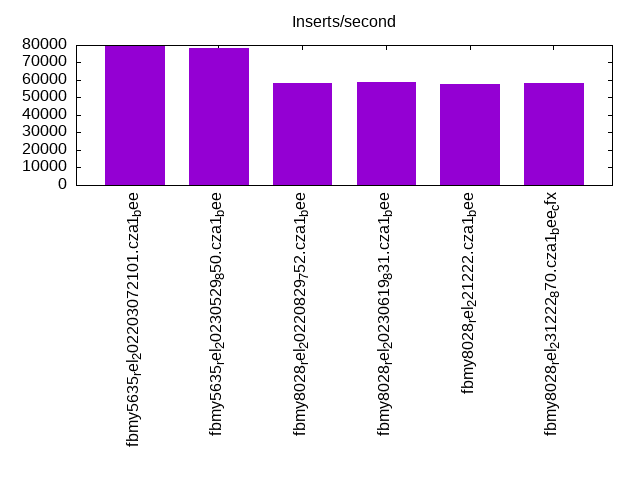
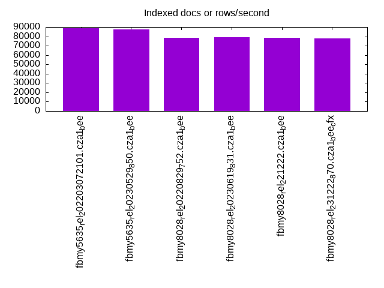
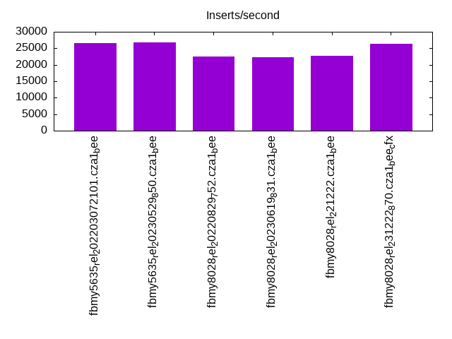
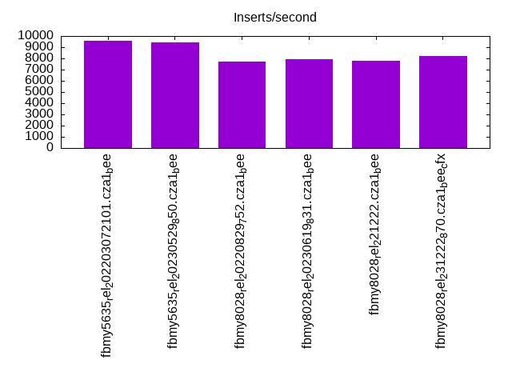
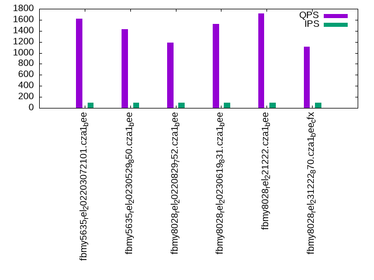
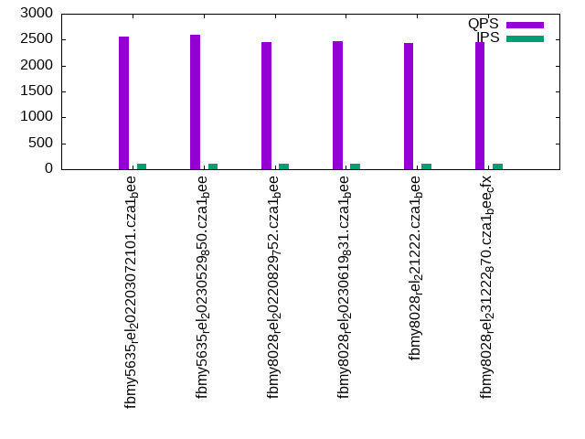
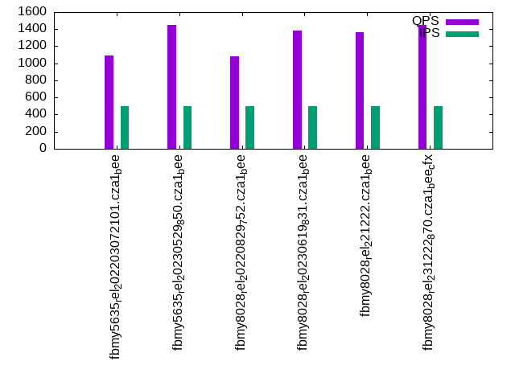
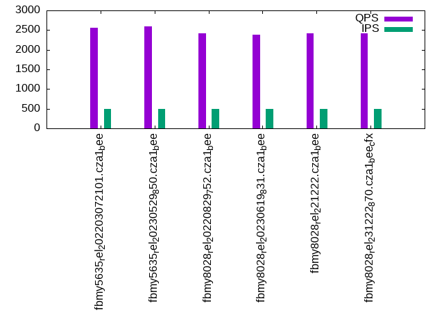
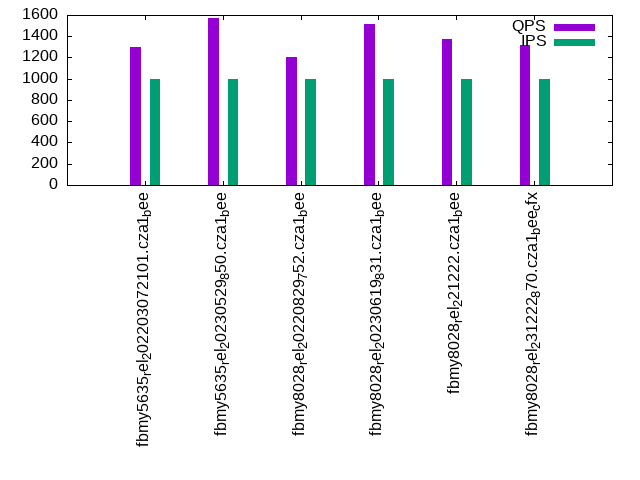
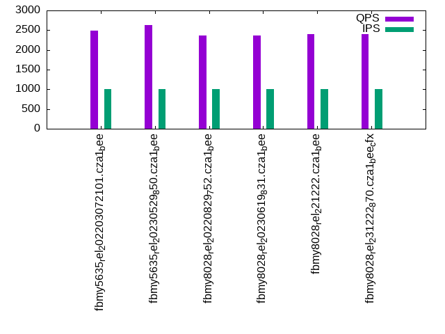

This is a report for the insert benchmark with 30M docs and 1 client(s). It is generated by scripts (bash, awk, sed) and Tufte might not be impressed. An overview of the insert benchmark is here and a short update is here. Below, by DBMS, I mean DBMS+version.config. An example is my8020.c10b40 where my means MySQL, 8020 is version 8.0.20 and c10b40 is the name for the configuration file.
The test server has 8 AMD cores, 16G RAM and an NVMe SSD. It is described here as the Beelink. The benchmark was run with 1 client and there were 1 or 3 connections per client (1 for queries or inserts without rate limits, 1+1 for rate limited inserts+deletes). It uses 1 table. It loads 30M rows per table without secondary indexes, creates 3 secondary indexes per table, then inserts 80m+20m rows per table with a delete per insert to avoid growing the table. It then does 6 read+write tests for 3600s each that do queries as fast as possible with 100,100,500,500,1000,1000 inserts/s and the same for deletes/s per client concurrent with the queries. The database is cached in memory. Clients and the DBMS share one server. The per-database configs are in the per-database subdirectories here.
The tested DBMS are:
The numbers are inserts/s for l.i0, l.i1 and l.i2, indexed docs (or rows) /s for l.x and queries/s for qr100, qp100 thru qr1000, qp1000" The values are the average rate over the entire test for inserts (IPS) and queries (QPS). The range of values for IPS and QPS is split into 3 parts: bottom 25%, middle 50%, top 25%. Values in the bottom 25% have a red background, values in the top 25% have a green background and values in the middle have no color. A gray background is used for values that can be ignored because the DBMS did not sustain the target insert rate. Red backgrounds are not used when the minimum value is within 80% of the max value.
| dbms | l.i0 | l.x | l.i1 | l.i2 | qr100 | qp100 | qr500 | qp500 | qr1000 | qp1000 |
|---|---|---|---|---|---|---|---|---|---|---|
| fbmy5635_rel_202203072101.cza1_bee | 79787 | 89021 | 26604 | 9569 | 1621 | 2558 | 1095 | 2557 | 1296 | 2494 |
| fbmy5635_rel_20230529_850.cza1_bee | 78125 | 87720 | 26765 | 9403 | 1430 | 2592 | 1448 | 2588 | 1572 | 2635 |
| fbmy8028_rel_20220829_752.cza1_bee | 58366 | 78534 | 22466 | 7701 | 1185 | 2454 | 1083 | 2425 | 1204 | 2368 |
| fbmy8028_rel_20230619_831.cza1_bee | 58594 | 78948 | 22253 | 7930 | 1523 | 2467 | 1379 | 2385 | 1514 | 2358 |
| fbmy8028_rel_221222.cza1_bee | 57692 | 78125 | 22676 | 7800 | 1717 | 2444 | 1360 | 2423 | 1373 | 2392 |
| fbmy8028_rel_231222_870.cza1_bee_cfx | 58480 | 77720 | 26429 | 8180 | 1114 | 2448 | 1452 | 2414 | 1322 | 2408 |
This table has relative throughput, throughput for the DBMS relative to the DBMS in the first line, using the absolute throughput from the previous table. Values less than 0.95 have a yellow background. Values greater than 1.05 have a blue background.
| dbms | l.i0 | l.x | l.i1 | l.i2 | qr100 | qp100 | qr500 | qp500 | qr1000 | qp1000 |
|---|---|---|---|---|---|---|---|---|---|---|
| fbmy5635_rel_202203072101.cza1_bee | 1.00 | 1.00 | 1.00 | 1.00 | 1.00 | 1.00 | 1.00 | 1.00 | 1.00 | 1.00 |
| fbmy5635_rel_20230529_850.cza1_bee | 0.98 | 0.99 | 1.01 | 0.98 | 0.88 | 1.01 | 1.32 | 1.01 | 1.21 | 1.06 |
| fbmy8028_rel_20220829_752.cza1_bee | 0.73 | 0.88 | 0.84 | 0.80 | 0.73 | 0.96 | 0.99 | 0.95 | 0.93 | 0.95 |
| fbmy8028_rel_20230619_831.cza1_bee | 0.73 | 0.89 | 0.84 | 0.83 | 0.94 | 0.96 | 1.26 | 0.93 | 1.17 | 0.95 |
| fbmy8028_rel_221222.cza1_bee | 0.72 | 0.88 | 0.85 | 0.82 | 1.06 | 0.96 | 1.24 | 0.95 | 1.06 | 0.96 |
| fbmy8028_rel_231222_870.cza1_bee_cfx | 0.73 | 0.87 | 0.99 | 0.85 | 0.69 | 0.96 | 1.33 | 0.94 | 1.02 | 0.97 |
This lists the average rate of inserts/s for the tests that do inserts concurrent with queries. For such tests the query rate is listed in the table above. The read+write tests are setup so that the insert rate should match the target rate every second. Cells that are not at least 95% of the target have a red background to indicate a failure to satisfy the target.
| dbms | qr100.L1 | qp100.L2 | qr500.L3 | qp500.L4 | qr1000.L5 | qp1000.L6 |
|---|---|---|---|---|---|---|
| fbmy5635_rel_202203072101.cza1_bee | 100 | 100 | 499 | 499 | 998 | 998 |
| fbmy5635_rel_20230529_850.cza1_bee | 100 | 100 | 499 | 499 | 998 | 998 |
| fbmy8028_rel_20220829_752.cza1_bee | 100 | 100 | 499 | 499 | 998 | 998 |
| fbmy8028_rel_20230619_831.cza1_bee | 100 | 100 | 499 | 499 | 998 | 998 |
| fbmy8028_rel_221222.cza1_bee | 100 | 100 | 499 | 499 | 998 | 998 |
| fbmy8028_rel_231222_870.cza1_bee_cfx | 100 | 100 | 499 | 499 | 998 | 998 |
| target | 100 | 100 | 500 | 500 | 1000 | 1000 |
l.i0: load without secondary indexes. Graphs for performance per 1-second interval are here.
Average throughput:
Insert response time histogram: each cell has the percentage of responses that take <= the time in the header and max is the max response time in seconds. For the max column values in the top 25% of the range have a red background and in the bottom 25% of the range have a green background. The red background is not used when the min value is within 80% of the max value.
| dbms | 256us | 1ms | 4ms | 16ms | 64ms | 256ms | 1s | 4s | 16s | gt | max |
|---|---|---|---|---|---|---|---|---|---|---|---|
| fbmy5635_rel_202203072101.cza1_bee | 99.872 | 0.124 | 0.001 | 0.003 | 0.119 | ||||||
| fbmy5635_rel_20230529_850.cza1_bee | 99.868 | 0.127 | 0.003 | 0.001 | 0.084 | ||||||
| fbmy8028_rel_20220829_752.cza1_bee | 99.725 | 0.201 | 0.071 | 0.003 | 0.099 | ||||||
| fbmy8028_rel_20230619_831.cza1_bee | 99.725 | 0.198 | 0.074 | 0.003 | 0.076 | ||||||
| fbmy8028_rel_221222.cza1_bee | 99.724 | 0.196 | 0.078 | 0.002 | 0.080 | ||||||
| fbmy8028_rel_231222_870.cza1_bee_cfx | 99.725 | 0.199 | 0.072 | 0.003 | 0.080 |
Performance metrics for the DBMS listed above. Some are normalized by throughput, others are not. Legend for results is here.
ips qps rps rmbps wps wmbps rpq rkbpq wpi wkbpi csps cpups cspq cpupq dbgb1 dbgb2 rss maxop p50 p99 tag 79787 0 0 0.0 38.0 13.8 0.000 0.000 0.000 0.177 7814 22.4 0.098 22 1.0 2.5 0.3 0.119 80411 71252 fbmy5635_rel_202203072101.cza1_bee 78125 0 0 0.0 36.0 13.1 0.000 0.000 0.000 0.172 7660 23.0 0.098 24 1.0 2.5 0.3 0.084 78715 71659 fbmy5635_rel_20230529_850.cza1_bee 58366 0 0 0.0 36.9 11.9 0.000 0.000 0.001 0.209 6102 22.4 0.105 31 0.9 2.7 0.6 0.099 58586 51243 fbmy8028_rel_20220829_752.cza1_bee 58594 0 0 0.0 37.3 12.0 0.000 0.000 0.001 0.211 6122 22.5 0.104 31 0.9 2.7 0.6 0.076 58714 53133 fbmy8028_rel_20230619_831.cza1_bee 57692 0 0 0.0 36.5 11.8 0.000 0.000 0.001 0.210 6057 22.2 0.105 31 0.9 2.7 0.6 0.080 57837 52141 fbmy8028_rel_221222.cza1_bee 58480 0 0 0.0 36.7 12.0 0.000 0.000 0.001 0.211 6137 22.5 0.105 31 0.9 2.7 0.6 0.080 58735 52341 fbmy8028_rel_231222_870.cza1_bee_cfx
l.x: create secondary indexes.
Average throughput:
Performance metrics for the DBMS listed above. Some are normalized by throughput, others are not. Legend for results is here.
ips qps rps rmbps wps wmbps rpq rkbpq wpi wkbpi csps cpups cspq cpupq dbgb1 dbgb2 rss maxop p50 p99 tag 89021 0 0 0.0 36.8 14.6 0.000 0.000 0.000 0.167 213 11.6 0.002 10 2.0 3.6 2.3 0.002 NA NA fbmy5635_rel_202203072101.cza1_bee 87720 0 0 0.0 36.1 14.3 0.000 0.000 0.000 0.167 203 11.7 0.002 11 2.0 3.6 2.4 0.002 NA NA fbmy5635_rel_20230529_850.cza1_bee 78534 0 0 0.0 31.4 12.1 0.000 0.000 0.000 0.158 392 11.6 0.005 12 2.0 3.8 2.7 0.003 NA NA fbmy8028_rel_20220829_752.cza1_bee 78948 0 0 0.0 31.5 12.2 0.000 0.000 0.000 0.158 380 11.6 0.005 12 2.0 3.8 2.7 0.003 NA NA fbmy8028_rel_20230619_831.cza1_bee 78125 0 0 0.0 31.3 12.1 0.000 0.000 0.000 0.158 363 11.6 0.005 12 2.0 3.8 2.7 0.003 NA NA fbmy8028_rel_221222.cza1_bee 77720 0 0 0.0 31.2 12.0 0.000 0.000 0.000 0.158 368 11.6 0.005 12 2.0 3.8 2.7 0.003 NA NA fbmy8028_rel_231222_870.cza1_bee_cfx
l.i1: continue load after secondary indexes created with 50 inserts per transaction. Graphs for performance per 1-second interval are here.
Average throughput:
Insert response time histogram: each cell has the percentage of responses that take <= the time in the header and max is the max response time in seconds. For the max column values in the top 25% of the range have a red background and in the bottom 25% of the range have a green background. The red background is not used when the min value is within 80% of the max value.
| dbms | 256us | 1ms | 4ms | 16ms | 64ms | 256ms | 1s | 4s | 16s | gt | max |
|---|---|---|---|---|---|---|---|---|---|---|---|
| fbmy5635_rel_202203072101.cza1_bee | 99.806 | 0.189 | 0.003 | 0.003 | 0.087 | ||||||
| fbmy5635_rel_20230529_850.cza1_bee | 99.804 | 0.190 | 0.003 | 0.002 | 0.103 | ||||||
| fbmy8028_rel_20220829_752.cza1_bee | 99.667 | 0.260 | 0.069 | 0.004 | 0.102 | ||||||
| fbmy8028_rel_20230619_831.cza1_bee | 99.664 | 0.276 | 0.057 | 0.003 | 0.107 | ||||||
| fbmy8028_rel_221222.cza1_bee | 99.669 | 0.273 | 0.056 | 0.003 | 0.104 | ||||||
| fbmy8028_rel_231222_870.cza1_bee_cfx | 99.698 | 0.243 | 0.057 | 0.003 | 0.083 |
Delete response time histogram: each cell has the percentage of responses that take <= the time in the header and max is the max response time in seconds. For the max column values in the top 25% of the range have a red background and in the bottom 25% of the range have a green background. The red background is not used when the min value is within 80% of the max value.
| dbms | 256us | 1ms | 4ms | 16ms | 64ms | 256ms | 1s | 4s | 16s | gt | max |
|---|---|---|---|---|---|---|---|---|---|---|---|
| fbmy5635_rel_202203072101.cza1_bee | 99.800 | 0.190 | 0.007 | 0.003 | 0.116 | ||||||
| fbmy5635_rel_20230529_850.cza1_bee | 99.795 | 0.194 | 0.009 | 0.002 | 0.103 | ||||||
| fbmy8028_rel_20220829_752.cza1_bee | 99.659 | 0.261 | 0.076 | 0.004 | 0.113 | ||||||
| fbmy8028_rel_20230619_831.cza1_bee | 99.659 | 0.277 | 0.060 | 0.004 | 0.104 | ||||||
| fbmy8028_rel_221222.cza1_bee | 99.658 | 0.276 | 0.062 | 0.003 | 0.111 | ||||||
| fbmy8028_rel_231222_870.cza1_bee_cfx | 99.686 | 0.251 | 0.060 | 0.003 | 0.111 |
Performance metrics for the DBMS listed above. Some are normalized by throughput, others are not. Legend for results is here.
ips qps rps rmbps wps wmbps rpq rkbpq wpi wkbpi csps cpups cspq cpupq dbgb1 dbgb2 rss maxop p50 p99 tag 26604 0 18 0.4 124.4 48.7 0.001 0.017 0.005 1.873 11355 48.3 0.427 145 2.9 4.4 8.4 0.087 26621 23424 fbmy5635_rel_202203072101.cza1_bee 26765 0 46 0.6 120.8 47.4 0.002 0.025 0.005 1.814 11379 48.3 0.425 144 2.4 3.9 8.3 0.103 26732 23923 fbmy5635_rel_20230529_850.cza1_bee 22466 0 10 0.6 117.3 44.7 0.000 0.026 0.005 2.036 9911 46.4 0.441 165 2.6 4.3 8.8 0.102 22474 19846 fbmy8028_rel_20220829_752.cza1_bee 22253 0 34 0.6 101.8 38.2 0.002 0.028 0.005 1.757 9761 43.2 0.439 155 3.2 4.9 8.6 0.107 22178 19779 fbmy8028_rel_20230619_831.cza1_bee 22676 0 104 0.5 107.5 40.4 0.005 0.025 0.005 1.826 10082 45.9 0.445 162 2.7 4.4 8.6 0.104 22635 20120 fbmy8028_rel_221222.cza1_bee 26429 0 151 0.8 143.5 54.7 0.006 0.032 0.005 2.119 12039 49.2 0.456 149 2.7 3.6 8.6 0.083 26371 23425 fbmy8028_rel_231222_870.cza1_bee_cfx
l.i2: continue load after secondary indexes created with 5 inserts per transaction. Graphs for performance per 1-second interval are here.
Average throughput:
Insert response time histogram: each cell has the percentage of responses that take <= the time in the header and max is the max response time in seconds. For the max column values in the top 25% of the range have a red background and in the bottom 25% of the range have a green background. The red background is not used when the min value is within 80% of the max value.
| dbms | 256us | 1ms | 4ms | 16ms | 64ms | 256ms | 1s | 4s | 16s | gt | max |
|---|---|---|---|---|---|---|---|---|---|---|---|
| fbmy5635_rel_202203072101.cza1_bee | 0.024 | 99.910 | 0.013 | 0.052 | 0.001 | nonzero | 0.078 | ||||
| fbmy5635_rel_20230529_850.cza1_bee | 0.011 | 99.919 | 0.016 | 0.053 | 0.001 | nonzero | 0.078 | ||||
| fbmy8028_rel_20220829_752.cza1_bee | 99.834 | 0.080 | 0.080 | 0.005 | nonzero | 0.076 | |||||
| fbmy8028_rel_20230619_831.cza1_bee | 99.847 | 0.070 | 0.079 | 0.004 | nonzero | 0.083 | |||||
| fbmy8028_rel_221222.cza1_bee | 99.811 | 0.104 | 0.081 | 0.004 | nonzero | 0.080 | |||||
| fbmy8028_rel_231222_870.cza1_bee_cfx | 99.893 | 0.024 | 0.078 | 0.004 | nonzero | 0.079 |
Delete response time histogram: each cell has the percentage of responses that take <= the time in the header and max is the max response time in seconds. For the max column values in the top 25% of the range have a red background and in the bottom 25% of the range have a green background. The red background is not used when the min value is within 80% of the max value.
| dbms | 256us | 1ms | 4ms | 16ms | 64ms | 256ms | 1s | 4s | 16s | gt | max |
|---|---|---|---|---|---|---|---|---|---|---|---|
| fbmy5635_rel_202203072101.cza1_bee | 99.926 | 0.020 | 0.052 | 0.001 | nonzero | 0.078 | |||||
| fbmy5635_rel_20230529_850.cza1_bee | 99.926 | 0.018 | 0.054 | 0.001 | nonzero | 0.078 | |||||
| fbmy8028_rel_20220829_752.cza1_bee | 99.744 | 0.169 | 0.081 | 0.005 | nonzero | 0.081 | |||||
| fbmy8028_rel_20230619_831.cza1_bee | 99.803 | 0.112 | 0.081 | 0.004 | nonzero | 0.091 | |||||
| fbmy8028_rel_221222.cza1_bee | 99.770 | 0.143 | 0.082 | 0.005 | 0.001 | 0.103 | |||||
| fbmy8028_rel_231222_870.cza1_bee_cfx | 99.872 | 0.044 | 0.079 | 0.005 | nonzero | 0.077 |
Performance metrics for the DBMS listed above. Some are normalized by throughput, others are not. Legend for results is here.
ips qps rps rmbps wps wmbps rpq rkbpq wpi wkbpi csps cpups cspq cpupq dbgb1 dbgb2 rss maxop p50 p99 tag 9569 0 4 0.2 95.8 35.8 0.000 0.020 0.010 3.831 39463 42.8 4.124 358 2.3 2.3 8.4 0.078 9460 7801 fbmy5635_rel_202203072101.cza1_bee 9403 0 6 0.2 107.7 39.1 0.001 0.023 0.011 4.263 38774 44.8 4.124 381 2.2 2.2 8.4 0.078 9329 7861 fbmy5635_rel_20230529_850.cza1_bee 7701 0 2 0.2 86.3 31.9 0.000 0.024 0.011 4.241 32504 41.8 4.221 434 2.5 2.7 8.8 0.076 7647 6498 fbmy8028_rel_20220829_752.cza1_bee 7930 0 11 0.3 85.5 29.5 0.001 0.034 0.011 3.812 33280 40.9 4.197 413 2.2 2.5 8.8 0.083 7849 6867 fbmy8028_rel_20230619_831.cza1_bee 7800 0 40 0.2 95.9 34.9 0.005 0.030 0.012 4.580 32715 43.2 4.194 443 2.2 2.4 8.7 0.080 7783 6867 fbmy8028_rel_221222.cza1_bee 8180 0 41 0.2 67.6 23.6 0.005 0.029 0.008 2.951 34193 36.9 4.180 361 2.3 2.8 8.6 0.079 8081 7132 fbmy8028_rel_231222_870.cza1_bee_cfx
qr100.L1: range queries with 100 insert/s per client. Graphs for performance per 1-second interval are here.
Average throughput:
Query response time histogram: each cell has the percentage of responses that take <= the time in the header and max is the max response time in seconds. For max values in the top 25% of the range have a red background and in the bottom 25% of the range have a green background. The red background is not used when the min value is within 80% of the max value.
| dbms | 256us | 1ms | 4ms | 16ms | 64ms | 256ms | 1s | 4s | 16s | gt | max |
|---|---|---|---|---|---|---|---|---|---|---|---|
| fbmy5635_rel_202203072101.cza1_bee | 15.639 | 64.892 | 19.469 | 0.001 | nonzero | 0.176 | |||||
| fbmy5635_rel_20230529_850.cza1_bee | 12.657 | 54.385 | 32.957 | nonzero | nonzero | 0.027 | |||||
| fbmy8028_rel_20220829_752.cza1_bee | 6.275 | 60.515 | 30.477 | 2.733 | nonzero | nonzero | 0.186 | ||||
| fbmy8028_rel_20230619_831.cza1_bee | 7.556 | 71.246 | 21.197 | 0.001 | nonzero | 0.032 | |||||
| fbmy8028_rel_221222.cza1_bee | 5.829 | 81.660 | 12.511 | nonzero | nonzero | 0.030 | |||||
| fbmy8028_rel_231222_870.cza1_bee_cfx | 2.991 | 65.656 | 31.222 | 0.132 | 0.008 |
Insert response time histogram: each cell has the percentage of responses that take <= the time in the header and max is the max response time in seconds. For max values in the top 25% of the range have a red background and in the bottom 25% of the range have a green background. The red background is not used when the min value is within 80% of the max value.
| dbms | 256us | 1ms | 4ms | 16ms | 64ms | 256ms | 1s | 4s | 16s | gt | max |
|---|---|---|---|---|---|---|---|---|---|---|---|
| fbmy5635_rel_202203072101.cza1_bee | 99.194 | 0.778 | 0.028 | 0.017 | |||||||
| fbmy5635_rel_20230529_850.cza1_bee | 99.597 | 0.403 | 0.014 | ||||||||
| fbmy8028_rel_20220829_752.cza1_bee | 99.250 | 0.694 | 0.056 | 0.019 | |||||||
| fbmy8028_rel_20230619_831.cza1_bee | 99.083 | 0.861 | 0.056 | 0.023 | |||||||
| fbmy8028_rel_221222.cza1_bee | 99.403 | 0.542 | 0.056 | 0.018 | |||||||
| fbmy8028_rel_231222_870.cza1_bee_cfx | 99.542 | 0.417 | 0.042 | 0.018 |
Delete response time histogram: each cell has the percentage of responses that take <= the time in the header and max is the max response time in seconds. For max values in the top 25% of the range have a red background and in the bottom 25% of the range have a green background. The red background is not used when the min value is within 80% of the max value.
| dbms | 256us | 1ms | 4ms | 16ms | 64ms | 256ms | 1s | 4s | 16s | gt | max |
|---|---|---|---|---|---|---|---|---|---|---|---|
| fbmy5635_rel_202203072101.cza1_bee | 99.236 | 0.750 | 0.014 | 0.018 | |||||||
| fbmy5635_rel_20230529_850.cza1_bee | 99.653 | 0.347 | 0.015 | ||||||||
| fbmy8028_rel_20220829_752.cza1_bee | 99.375 | 0.583 | 0.042 | 0.018 | |||||||
| fbmy8028_rel_20230619_831.cza1_bee | 99.236 | 0.722 | 0.042 | 0.023 | |||||||
| fbmy8028_rel_221222.cza1_bee | 99.472 | 0.500 | 0.028 | 0.018 | |||||||
| fbmy8028_rel_231222_870.cza1_bee_cfx | 99.458 | 0.500 | 0.042 | 0.018 |
Performance metrics for the DBMS listed above. Some are normalized by throughput, others are not. Legend for results is here.
ips qps rps rmbps wps wmbps rpq rkbpq wpi wkbpi csps cpups cspq cpupq dbgb1 dbgb2 rss maxop p50 p99 tag 100 1621 0 0.0 7.8 1.9 0.000 0.000 0.078 19.873 6362 12.6 3.925 622 2.0 2.1 8.5 0.176 1615 1455 fbmy5635_rel_202203072101.cza1_bee 100 1430 0 0.0 4.1 0.4 0.000 0.000 0.041 3.637 5620 11.9 3.930 666 2.2 2.2 8.4 0.027 1423 1294 fbmy5635_rel_20230529_850.cza1_bee 100 1185 0 0.0 8.6 2.1 0.000 0.000 0.086 21.935 4850 13.4 4.091 904 2.0 2.3 8.9 0.186 1183 1071 fbmy8028_rel_20220829_752.cza1_bee 100 1523 0 0.0 4.4 0.4 0.000 0.000 0.044 4.422 6105 12.5 4.010 657 2.1 2.4 8.8 0.032 1726 1039 fbmy8028_rel_20230619_831.cza1_bee 100 1717 0 0.0 4.3 0.4 0.000 0.000 0.043 4.049 6843 12.5 3.985 582 2.2 2.4 8.7 0.030 1710 1483 fbmy8028_rel_221222.cza1_bee 100 1114 0 0.0 3.6 0.2 0.000 0.000 0.036 1.835 4550 12.4 4.083 890 2.2 2.5 8.7 0.008 1103 959 fbmy8028_rel_231222_870.cza1_bee_cfx
qp100.L2: point queries with 100 insert/s per client. Graphs for performance per 1-second interval are here.
Average throughput:
Query response time histogram: each cell has the percentage of responses that take <= the time in the header and max is the max response time in seconds. For max values in the top 25% of the range have a red background and in the bottom 25% of the range have a green background. The red background is not used when the min value is within 80% of the max value.
| dbms | 256us | 1ms | 4ms | 16ms | 64ms | 256ms | 1s | 4s | 16s | gt | max |
|---|---|---|---|---|---|---|---|---|---|---|---|
| fbmy5635_rel_202203072101.cza1_bee | 2.915 | 97.082 | 0.003 | nonzero | nonzero | 0.024 | |||||
| fbmy5635_rel_20230529_850.cza1_bee | 2.468 | 97.530 | 0.002 | 0.001 | 0.010 | ||||||
| fbmy8028_rel_20220829_752.cza1_bee | nonzero | 99.993 | 0.006 | nonzero | 0.005 | ||||||
| fbmy8028_rel_20230619_831.cza1_bee | nonzero | 99.994 | 0.005 | 0.001 | 0.010 | ||||||
| fbmy8028_rel_221222.cza1_bee | nonzero | 99.992 | 0.007 | 0.001 | 0.010 | ||||||
| fbmy8028_rel_231222_870.cza1_bee_cfx | nonzero | 99.990 | 0.009 | 0.001 | 0.010 |
Insert response time histogram: each cell has the percentage of responses that take <= the time in the header and max is the max response time in seconds. For max values in the top 25% of the range have a red background and in the bottom 25% of the range have a green background. The red background is not used when the min value is within 80% of the max value.
| dbms | 256us | 1ms | 4ms | 16ms | 64ms | 256ms | 1s | 4s | 16s | gt | max |
|---|---|---|---|---|---|---|---|---|---|---|---|
| fbmy5635_rel_202203072101.cza1_bee | 99.431 | 0.556 | 0.014 | 0.016 | |||||||
| fbmy5635_rel_20230529_850.cza1_bee | 99.375 | 0.597 | 0.028 | 0.019 | |||||||
| fbmy8028_rel_20220829_752.cza1_bee | 99.278 | 0.653 | 0.069 | 0.018 | |||||||
| fbmy8028_rel_20230619_831.cza1_bee | 99.250 | 0.681 | 0.069 | 0.018 | |||||||
| fbmy8028_rel_221222.cza1_bee | 99.306 | 0.625 | 0.069 | 0.018 | |||||||
| fbmy8028_rel_231222_870.cza1_bee_cfx | 99.667 | 0.264 | 0.069 | 0.023 |
Delete response time histogram: each cell has the percentage of responses that take <= the time in the header and max is the max response time in seconds. For max values in the top 25% of the range have a red background and in the bottom 25% of the range have a green background. The red background is not used when the min value is within 80% of the max value.
| dbms | 256us | 1ms | 4ms | 16ms | 64ms | 256ms | 1s | 4s | 16s | gt | max |
|---|---|---|---|---|---|---|---|---|---|---|---|
| fbmy5635_rel_202203072101.cza1_bee | 99.361 | 0.625 | 0.014 | 0.199 | |||||||
| fbmy5635_rel_20230529_850.cza1_bee | 99.444 | 0.556 | 0.014 | ||||||||
| fbmy8028_rel_20220829_752.cza1_bee | 99.458 | 0.514 | 0.028 | 0.018 | |||||||
| fbmy8028_rel_20230619_831.cza1_bee | 99.403 | 0.542 | 0.056 | 0.018 | |||||||
| fbmy8028_rel_221222.cza1_bee | 99.542 | 0.403 | 0.056 | 0.018 | |||||||
| fbmy8028_rel_231222_870.cza1_bee_cfx | 99.625 | 0.306 | 0.069 | 0.023 |
Performance metrics for the DBMS listed above. Some are normalized by throughput, others are not. Legend for results is here.
ips qps rps rmbps wps wmbps rpq rkbpq wpi wkbpi csps cpups cspq cpupq dbgb1 dbgb2 rss maxop p50 p99 tag 100 2558 0 0.0 8.9 2.4 0.000 0.000 0.090 24.898 10477 14.3 4.097 447 2.0 2.2 9.2 0.024 2541 2142 fbmy5635_rel_202203072101.cza1_bee 100 2592 12 0.1 4.6 0.6 0.004 0.028 0.046 5.951 10628 13.6 4.100 420 2.1 2.3 8.9 0.010 2573 2381 fbmy5635_rel_20230529_850.cza1_bee 100 2454 0 0.0 9.2 2.5 0.000 0.000 0.093 25.640 10223 14.5 4.165 473 2.1 2.4 10.0 0.005 2414 1950 fbmy8028_rel_20220829_752.cza1_bee 100 2467 14 0.1 4.4 0.5 0.006 0.037 0.044 5.208 10257 13.5 4.158 438 2.1 2.5 9.4 0.010 2429 2046 fbmy8028_rel_20230619_831.cza1_bee 100 2444 14 0.1 4.6 0.5 0.006 0.037 0.046 5.291 10170 13.6 4.162 445 2.2 2.5 9.4 0.010 2413 1998 fbmy8028_rel_221222.cza1_bee 100 2448 16 0.1 3.7 0.2 0.007 0.042 0.038 2.420 10194 13.4 4.165 438 2.3 2.6 9.3 0.010 2413 1996 fbmy8028_rel_231222_870.cza1_bee_cfx
qr500.L3: range queries with 500 insert/s per client. Graphs for performance per 1-second interval are here.
Average throughput:
Query response time histogram: each cell has the percentage of responses that take <= the time in the header and max is the max response time in seconds. For max values in the top 25% of the range have a red background and in the bottom 25% of the range have a green background. The red background is not used when the min value is within 80% of the max value.
| dbms | 256us | 1ms | 4ms | 16ms | 64ms | 256ms | 1s | 4s | 16s | gt | max |
|---|---|---|---|---|---|---|---|---|---|---|---|
| fbmy5635_rel_202203072101.cza1_bee | 11.225 | 57.609 | 31.077 | 0.088 | nonzero | nonzero | 0.176 | ||||
| fbmy5635_rel_20230529_850.cza1_bee | 13.359 | 67.455 | 19.185 | 0.001 | nonzero | 0.035 | |||||
| fbmy8028_rel_20220829_752.cza1_bee | 5.394 | 69.776 | 23.022 | 1.808 | nonzero | nonzero | 0.175 | ||||
| fbmy8028_rel_20230619_831.cza1_bee | 5.813 | 74.062 | 20.079 | 0.046 | nonzero | 0.031 | |||||
| fbmy8028_rel_221222.cza1_bee | 4.447 | 72.276 | 23.277 | nonzero | nonzero | 0.038 | |||||
| fbmy8028_rel_231222_870.cza1_bee_cfx | 2.897 | 76.590 | 20.169 | 0.344 | nonzero | 0.036 |
Insert response time histogram: each cell has the percentage of responses that take <= the time in the header and max is the max response time in seconds. For max values in the top 25% of the range have a red background and in the bottom 25% of the range have a green background. The red background is not used when the min value is within 80% of the max value.
| dbms | 256us | 1ms | 4ms | 16ms | 64ms | 256ms | 1s | 4s | 16s | gt | max |
|---|---|---|---|---|---|---|---|---|---|---|---|
| fbmy5635_rel_202203072101.cza1_bee | 99.739 | 0.258 | 0.003 | 0.049 | |||||||
| fbmy5635_rel_20230529_850.cza1_bee | 99.733 | 0.261 | 0.006 | 0.061 | |||||||
| fbmy8028_rel_20220829_752.cza1_bee | 99.525 | 0.386 | 0.089 | 0.047 | |||||||
| fbmy8028_rel_20230619_831.cza1_bee | 99.567 | 0.347 | 0.086 | 0.063 | |||||||
| fbmy8028_rel_221222.cza1_bee | 99.500 | 0.411 | 0.086 | 0.003 | 0.064 | ||||||
| fbmy8028_rel_231222_870.cza1_bee_cfx | 99.611 | 0.311 | 0.078 | 0.047 |
Delete response time histogram: each cell has the percentage of responses that take <= the time in the header and max is the max response time in seconds. For max values in the top 25% of the range have a red background and in the bottom 25% of the range have a green background. The red background is not used when the min value is within 80% of the max value.
| dbms | 256us | 1ms | 4ms | 16ms | 64ms | 256ms | 1s | 4s | 16s | gt | max |
|---|---|---|---|---|---|---|---|---|---|---|---|
| fbmy5635_rel_202203072101.cza1_bee | 99.772 | 0.222 | 0.006 | 0.048 | |||||||
| fbmy5635_rel_20230529_850.cza1_bee | 99.694 | 0.300 | 0.006 | 0.062 | |||||||
| fbmy8028_rel_20220829_752.cza1_bee | 99.544 | 0.369 | 0.086 | 0.061 | |||||||
| fbmy8028_rel_20230619_831.cza1_bee | 99.592 | 0.331 | 0.078 | 0.049 | |||||||
| fbmy8028_rel_221222.cza1_bee | 99.528 | 0.392 | 0.081 | 0.051 | |||||||
| fbmy8028_rel_231222_870.cza1_bee_cfx | 99.597 | 0.319 | 0.083 | 0.062 |
Performance metrics for the DBMS listed above. Some are normalized by throughput, others are not. Legend for results is here.
ips qps rps rmbps wps wmbps rpq rkbpq wpi wkbpi csps cpups cspq cpupq dbgb1 dbgb2 rss maxop p50 p99 tag 499 1095 0 0.0 30.5 11.5 0.000 0.000 0.061 23.603 4620 17.8 4.221 1301 2.1 2.7 8.9 0.176 1086 862 fbmy5635_rel_202203072101.cza1_bee 499 1448 0 0.0 8.5 2.3 0.000 0.000 0.017 4.691 5828 13.5 4.024 746 2.1 2.7 8.5 0.035 1408 1039 fbmy5635_rel_20230529_850.cza1_bee 499 1083 0 0.0 30.7 11.6 0.000 0.000 0.062 23.693 4732 18.2 4.368 1344 2.1 2.8 9.9 0.175 1055 879 fbmy8028_rel_20220829_752.cza1_bee 499 1379 0 0.0 8.6 2.3 0.000 0.000 0.017 4.723 5692 13.5 4.127 783 2.1 2.8 9.1 0.031 1375 1007 fbmy8028_rel_20230619_831.cza1_bee 499 1360 0 0.0 8.8 2.3 0.000 0.000 0.018 4.678 5624 13.5 4.135 794 2.1 2.9 9.3 0.038 1342 1071 fbmy8028_rel_221222.cza1_bee 499 1452 0 0.0 6.5 1.3 0.000 0.000 0.013 2.715 5976 13.1 4.115 722 2.3 3.0 9.2 0.036 1392 911 fbmy8028_rel_231222_870.cza1_bee_cfx
qp500.L4: point queries with 500 insert/s per client. Graphs for performance per 1-second interval are here.
Average throughput:
Query response time histogram: each cell has the percentage of responses that take <= the time in the header and max is the max response time in seconds. For max values in the top 25% of the range have a red background and in the bottom 25% of the range have a green background. The red background is not used when the min value is within 80% of the max value.
| dbms | 256us | 1ms | 4ms | 16ms | 64ms | 256ms | 1s | 4s | 16s | gt | max |
|---|---|---|---|---|---|---|---|---|---|---|---|
| fbmy5635_rel_202203072101.cza1_bee | 2.534 | 97.458 | 0.008 | nonzero | 0.005 | ||||||
| fbmy5635_rel_20230529_850.cza1_bee | 3.502 | 96.495 | 0.004 | nonzero | 0.004 | ||||||
| fbmy8028_rel_20220829_752.cza1_bee | 99.992 | 0.008 | nonzero | 0.005 | |||||||
| fbmy8028_rel_20230619_831.cza1_bee | nonzero | 99.993 | 0.007 | nonzero | 0.008 | ||||||
| fbmy8028_rel_221222.cza1_bee | nonzero | 99.994 | 0.006 | nonzero | 0.004 | ||||||
| fbmy8028_rel_231222_870.cza1_bee_cfx | 0.001 | 99.993 | 0.006 | nonzero | 0.006 |
Insert response time histogram: each cell has the percentage of responses that take <= the time in the header and max is the max response time in seconds. For max values in the top 25% of the range have a red background and in the bottom 25% of the range have a green background. The red background is not used when the min value is within 80% of the max value.
| dbms | 256us | 1ms | 4ms | 16ms | 64ms | 256ms | 1s | 4s | 16s | gt | max |
|---|---|---|---|---|---|---|---|---|---|---|---|
| fbmy5635_rel_202203072101.cza1_bee | 99.667 | 0.325 | 0.008 | 0.054 | |||||||
| fbmy5635_rel_20230529_850.cza1_bee | 99.744 | 0.253 | 0.003 | 0.066 | |||||||
| fbmy8028_rel_20220829_752.cza1_bee | 99.397 | 0.525 | 0.078 | 0.038 | |||||||
| fbmy8028_rel_20230619_831.cza1_bee | 99.367 | 0.558 | 0.075 | 0.041 | |||||||
| fbmy8028_rel_221222.cza1_bee | 99.481 | 0.431 | 0.089 | 0.044 | |||||||
| fbmy8028_rel_231222_870.cza1_bee_cfx | 99.558 | 0.367 | 0.072 | 0.003 | 0.064 |
Delete response time histogram: each cell has the percentage of responses that take <= the time in the header and max is the max response time in seconds. For max values in the top 25% of the range have a red background and in the bottom 25% of the range have a green background. The red background is not used when the min value is within 80% of the max value.
| dbms | 256us | 1ms | 4ms | 16ms | 64ms | 256ms | 1s | 4s | 16s | gt | max |
|---|---|---|---|---|---|---|---|---|---|---|---|
| fbmy5635_rel_202203072101.cza1_bee | 99.689 | 0.300 | 0.008 | 0.003 | 0.192 | ||||||
| fbmy5635_rel_20230529_850.cza1_bee | 99.764 | 0.233 | 0.003 | 0.065 | |||||||
| fbmy8028_rel_20220829_752.cza1_bee | 99.372 | 0.550 | 0.075 | 0.003 | 0.190 | ||||||
| fbmy8028_rel_20230619_831.cza1_bee | 99.428 | 0.508 | 0.064 | 0.055 | |||||||
| fbmy8028_rel_221222.cza1_bee | 99.567 | 0.364 | 0.069 | 0.052 | |||||||
| fbmy8028_rel_231222_870.cza1_bee_cfx | 99.533 | 0.389 | 0.078 | 0.050 |
Performance metrics for the DBMS listed above. Some are normalized by throughput, others are not. Legend for results is here.
ips qps rps rmbps wps wmbps rpq rkbpq wpi wkbpi csps cpups cspq cpupq dbgb1 dbgb2 rss maxop p50 p99 tag 499 2557 0 0.0 31.1 12.0 0.000 0.000 0.062 24.599 10699 18.7 4.185 585 2.1 3.1 9.1 0.005 2508 2061 fbmy5635_rel_202203072101.cza1_bee 499 2588 0 0.0 8.6 2.2 0.000 0.000 0.017 4.557 10709 14.4 4.138 445 2.1 3.1 9.1 0.004 2556 2365 fbmy5635_rel_20230529_850.cza1_bee 499 2425 0 0.0 30.8 11.8 0.000 0.013 0.062 24.220 10327 19.2 4.258 633 2.0 3.1 9.6 0.005 2429 1836 fbmy8028_rel_20220829_752.cza1_bee 499 2385 0 0.0 8.8 2.2 0.000 0.000 0.018 4.528 10035 14.7 4.207 493 2.1 3.3 9.2 0.008 2364 2013 fbmy8028_rel_20230619_831.cza1_bee 499 2423 0 0.0 9.1 2.3 0.000 0.000 0.018 4.716 10173 14.6 4.199 482 2.1 3.3 9.4 0.004 2383 1998 fbmy8028_rel_221222.cza1_bee 499 2414 0 0.0 6.9 1.5 0.000 0.000 0.014 3.096 10154 14.4 4.206 477 2.2 3.4 9.4 0.006 2397 2013 fbmy8028_rel_231222_870.cza1_bee_cfx
qr1000.L5: range queries with 1000 insert/s per client. Graphs for performance per 1-second interval are here.
Average throughput:
Query response time histogram: each cell has the percentage of responses that take <= the time in the header and max is the max response time in seconds. For max values in the top 25% of the range have a red background and in the bottom 25% of the range have a green background. The red background is not used when the min value is within 80% of the max value.
| dbms | 256us | 1ms | 4ms | 16ms | 64ms | 256ms | 1s | 4s | 16s | gt | max |
|---|---|---|---|---|---|---|---|---|---|---|---|
| fbmy5635_rel_202203072101.cza1_bee | 12.756 | 69.621 | 13.492 | 4.129 | nonzero | 0.001 | 0.184 | ||||
| fbmy5635_rel_20230529_850.cza1_bee | 12.301 | 67.597 | 20.101 | 0.001 | nonzero | 0.042 | |||||
| fbmy8028_rel_20220829_752.cza1_bee | 5.033 | 70.748 | 21.967 | 2.251 | nonzero | nonzero | 0.181 | ||||
| fbmy8028_rel_20230619_831.cza1_bee | 5.181 | 72.906 | 21.912 | nonzero | nonzero | 0.031 | |||||
| fbmy8028_rel_221222.cza1_bee | 4.291 | 71.017 | 24.691 | 0.001 | 0.001 | 0.038 | |||||
| fbmy8028_rel_231222_870.cza1_bee_cfx | 1.901 | 72.869 | 25.230 | nonzero | nonzero | 0.034 |
Insert response time histogram: each cell has the percentage of responses that take <= the time in the header and max is the max response time in seconds. For max values in the top 25% of the range have a red background and in the bottom 25% of the range have a green background. The red background is not used when the min value is within 80% of the max value.
| dbms | 256us | 1ms | 4ms | 16ms | 64ms | 256ms | 1s | 4s | 16s | gt | max |
|---|---|---|---|---|---|---|---|---|---|---|---|
| fbmy5635_rel_202203072101.cza1_bee | 99.554 | 0.440 | 0.006 | 0.063 | |||||||
| fbmy5635_rel_20230529_850.cza1_bee | 99.711 | 0.285 | 0.001 | 0.003 | 0.066 | ||||||
| fbmy8028_rel_20220829_752.cza1_bee | 99.571 | 0.346 | 0.083 | 0.049 | |||||||
| fbmy8028_rel_20230619_831.cza1_bee | 99.542 | 0.376 | 0.082 | 0.064 | |||||||
| fbmy8028_rel_221222.cza1_bee | 99.583 | 0.331 | 0.086 | 0.064 | |||||||
| fbmy8028_rel_231222_870.cza1_bee_cfx | 99.708 | 0.204 | 0.086 | 0.001 | 0.064 |
Delete response time histogram: each cell has the percentage of responses that take <= the time in the header and max is the max response time in seconds. For max values in the top 25% of the range have a red background and in the bottom 25% of the range have a green background. The red background is not used when the min value is within 80% of the max value.
| dbms | 256us | 1ms | 4ms | 16ms | 64ms | 256ms | 1s | 4s | 16s | gt | max |
|---|---|---|---|---|---|---|---|---|---|---|---|
| fbmy5635_rel_202203072101.cza1_bee | 99.493 | 0.499 | 0.008 | 0.063 | |||||||
| fbmy5635_rel_20230529_850.cza1_bee | 99.683 | 0.311 | 0.003 | 0.003 | 0.065 | ||||||
| fbmy8028_rel_20220829_752.cza1_bee | 99.606 | 0.310 | 0.082 | 0.003 | 0.188 | ||||||
| fbmy8028_rel_20230619_831.cza1_bee | 99.574 | 0.350 | 0.075 | 0.001 | 0.064 | ||||||
| fbmy8028_rel_221222.cza1_bee | 99.614 | 0.303 | 0.082 | 0.001 | 0.079 | ||||||
| fbmy8028_rel_231222_870.cza1_bee_cfx | 99.699 | 0.214 | 0.088 | 0.063 |
Performance metrics for the DBMS listed above. Some are normalized by throughput, others are not. Legend for results is here.
ips qps rps rmbps wps wmbps rpq rkbpq wpi wkbpi csps cpups cspq cpupq dbgb1 dbgb2 rss maxop p50 p99 tag 998 1296 1 0.0 56.8 23.4 0.001 0.039 0.057 24.004 5757 24.4 4.441 1506 2.9 4.6 8.8 0.184 1263 719 fbmy5635_rel_202203072101.cza1_bee 998 1572 0 0.0 14.4 4.8 0.000 0.000 0.014 4.924 6526 15.2 4.152 774 2.1 3.9 9.1 0.042 1503 1151 fbmy5635_rel_20230529_850.cza1_bee 998 1204 1 0.1 56.2 22.9 0.001 0.043 0.056 23.453 5585 24.8 4.638 1648 2.8 4.8 9.6 0.181 1183 911 fbmy8028_rel_20220829_752.cza1_bee 998 1514 0 0.0 14.1 4.7 0.000 0.000 0.014 4.793 6454 15.5 4.262 819 2.2 4.1 9.1 0.031 1470 1039 fbmy8028_rel_20230619_831.cza1_bee 998 1373 0 0.0 14.6 4.8 0.000 0.000 0.015 4.882 5920 15.5 4.313 903 2.1 4.1 9.1 0.038 1327 959 fbmy8028_rel_221222.cza1_bee 998 1322 0 0.0 9.5 2.6 0.000 0.000 0.010 2.682 5683 14.3 4.297 865 2.3 4.3 9.5 0.034 1274 943 fbmy8028_rel_231222_870.cza1_bee_cfx
qp1000.L6: point queries with 1000 insert/s per client. Graphs for performance per 1-second interval are here.
Average throughput:
Query response time histogram: each cell has the percentage of responses that take <= the time in the header and max is the max response time in seconds. For max values in the top 25% of the range have a red background and in the bottom 25% of the range have a green background. The red background is not used when the min value is within 80% of the max value.
| dbms | 256us | 1ms | 4ms | 16ms | 64ms | 256ms | 1s | 4s | 16s | gt | max |
|---|---|---|---|---|---|---|---|---|---|---|---|
| fbmy5635_rel_202203072101.cza1_bee | 0.559 | 99.431 | 0.010 | nonzero | 0.005 | ||||||
| fbmy5635_rel_20230529_850.cza1_bee | 6.215 | 93.778 | 0.007 | nonzero | 0.008 | ||||||
| fbmy8028_rel_20220829_752.cza1_bee | nonzero | 99.992 | 0.008 | nonzero | nonzero | 0.029 | |||||
| fbmy8028_rel_20230619_831.cza1_bee | 99.992 | 0.008 | nonzero | 0.011 | |||||||
| fbmy8028_rel_221222.cza1_bee | 99.990 | 0.009 | 0.001 | 0.010 | |||||||
| fbmy8028_rel_231222_870.cza1_bee_cfx | 99.993 | 0.007 | nonzero | 0.006 |
Insert response time histogram: each cell has the percentage of responses that take <= the time in the header and max is the max response time in seconds. For max values in the top 25% of the range have a red background and in the bottom 25% of the range have a green background. The red background is not used when the min value is within 80% of the max value.
| dbms | 256us | 1ms | 4ms | 16ms | 64ms | 256ms | 1s | 4s | 16s | gt | max |
|---|---|---|---|---|---|---|---|---|---|---|---|
| fbmy5635_rel_202203072101.cza1_bee | 99.756 | 0.237 | 0.006 | 0.001 | 0.076 | ||||||
| fbmy5635_rel_20230529_850.cza1_bee | 99.779 | 0.215 | 0.006 | 0.048 | |||||||
| fbmy8028_rel_20220829_752.cza1_bee | 99.635 | 0.278 | 0.088 | 0.049 | |||||||
| fbmy8028_rel_20230619_831.cza1_bee | 99.519 | 0.396 | 0.085 | 0.064 | |||||||
| fbmy8028_rel_221222.cza1_bee | 99.593 | 0.318 | 0.089 | 0.055 | |||||||
| fbmy8028_rel_231222_870.cza1_bee_cfx | 99.685 | 0.231 | 0.085 | 0.049 |
Delete response time histogram: each cell has the percentage of responses that take <= the time in the header and max is the max response time in seconds. For max values in the top 25% of the range have a red background and in the bottom 25% of the range have a green background. The red background is not used when the min value is within 80% of the max value.
| dbms | 256us | 1ms | 4ms | 16ms | 64ms | 256ms | 1s | 4s | 16s | gt | max |
|---|---|---|---|---|---|---|---|---|---|---|---|
| fbmy5635_rel_202203072101.cza1_bee | 99.674 | 0.321 | 0.006 | 0.055 | |||||||
| fbmy5635_rel_20230529_850.cza1_bee | 99.792 | 0.203 | 0.006 | 0.049 | |||||||
| fbmy8028_rel_20220829_752.cza1_bee | 99.722 | 0.193 | 0.085 | 0.062 | |||||||
| fbmy8028_rel_20230619_831.cza1_bee | 99.572 | 0.346 | 0.082 | 0.064 | |||||||
| fbmy8028_rel_221222.cza1_bee | 99.628 | 0.285 | 0.088 | 0.063 | |||||||
| fbmy8028_rel_231222_870.cza1_bee_cfx | 99.682 | 0.233 | 0.085 | 0.064 |
Performance metrics for the DBMS listed above. Some are normalized by throughput, others are not. Legend for results is here.
ips qps rps rmbps wps wmbps rpq rkbpq wpi wkbpi csps cpups cspq cpupq dbgb1 dbgb2 rss maxop p50 p99 tag 998 2494 0 0.0 59.7 23.3 0.000 0.000 0.060 23.947 10798 25.0 4.330 802 3.8 4.3 9.1 0.005 2430 1949 fbmy5635_rel_202203072101.cza1_bee 998 2635 0 0.0 14.8 4.6 0.000 0.000 0.015 4.749 11116 16.0 4.219 486 2.1 2.7 8.7 0.008 2573 2379 fbmy5635_rel_20230529_850.cza1_bee 998 2368 1 0.1 62.0 24.0 0.000 0.039 0.062 24.655 10458 25.9 4.416 875 2.9 3.7 9.6 0.029 2382 1774 fbmy8028_rel_20220829_752.cza1_bee 998 2358 0 0.0 14.3 4.6 0.000 0.000 0.014 4.669 10144 16.5 4.301 560 2.2 2.9 9.1 0.011 2348 1999 fbmy8028_rel_20230619_831.cza1_bee 998 2392 0 0.0 14.0 4.5 0.000 0.001 0.014 4.611 10277 16.4 4.296 548 2.2 2.9 9.1 0.010 2365 1966 fbmy8028_rel_221222.cza1_bee 998 2408 0 0.0 10.2 2.9 0.000 0.000 0.010 2.938 10317 15.5 4.285 515 2.3 2.6 9.2 0.006 2381 1982 fbmy8028_rel_231222_870.cza1_bee_cfx
l.i0: load without secondary indexes
Performance metrics for all DBMS, not just the ones listed above. Some are normalized by throughput, others are not. Legend for results is here.
ips qps rps rmbps wps wmbps rpq rkbpq wpi wkbpi csps cpups cspq cpupq dbgb1 dbgb2 rss maxop p50 p99 tag 79787 0 0 0.0 38.0 13.8 0.000 0.000 0.000 0.177 7814 22.4 0.098 22 1.0 2.5 0.3 0.119 80411 71252 fbmy5635_rel_202203072101.cza1_bee 78125 0 0 0.0 36.0 13.1 0.000 0.000 0.000 0.172 7660 23.0 0.098 24 1.0 2.5 0.3 0.084 78715 71659 fbmy5635_rel_20230529_850.cza1_bee 58366 0 0 0.0 36.9 11.9 0.000 0.000 0.001 0.209 6102 22.4 0.105 31 0.9 2.7 0.6 0.099 58586 51243 fbmy8028_rel_20220829_752.cza1_bee 58594 0 0 0.0 37.3 12.0 0.000 0.000 0.001 0.211 6122 22.5 0.104 31 0.9 2.7 0.6 0.076 58714 53133 fbmy8028_rel_20230619_831.cza1_bee 57692 0 0 0.0 36.5 11.8 0.000 0.000 0.001 0.210 6057 22.2 0.105 31 0.9 2.7 0.6 0.080 57837 52141 fbmy8028_rel_221222.cza1_bee 58480 0 0 0.0 36.7 12.0 0.000 0.000 0.001 0.211 6137 22.5 0.105 31 0.9 2.7 0.6 0.080 58735 52341 fbmy8028_rel_231222_870.cza1_bee_cfx
l.x: create secondary indexes
Performance metrics for all DBMS, not just the ones listed above. Some are normalized by throughput, others are not. Legend for results is here.
ips qps rps rmbps wps wmbps rpq rkbpq wpi wkbpi csps cpups cspq cpupq dbgb1 dbgb2 rss maxop p50 p99 tag 89021 0 0 0.0 36.8 14.6 0.000 0.000 0.000 0.167 213 11.6 0.002 10 2.0 3.6 2.3 0.002 NA NA fbmy5635_rel_202203072101.cza1_bee 87720 0 0 0.0 36.1 14.3 0.000 0.000 0.000 0.167 203 11.7 0.002 11 2.0 3.6 2.4 0.002 NA NA fbmy5635_rel_20230529_850.cza1_bee 78534 0 0 0.0 31.4 12.1 0.000 0.000 0.000 0.158 392 11.6 0.005 12 2.0 3.8 2.7 0.003 NA NA fbmy8028_rel_20220829_752.cza1_bee 78948 0 0 0.0 31.5 12.2 0.000 0.000 0.000 0.158 380 11.6 0.005 12 2.0 3.8 2.7 0.003 NA NA fbmy8028_rel_20230619_831.cza1_bee 78125 0 0 0.0 31.3 12.1 0.000 0.000 0.000 0.158 363 11.6 0.005 12 2.0 3.8 2.7 0.003 NA NA fbmy8028_rel_221222.cza1_bee 77720 0 0 0.0 31.2 12.0 0.000 0.000 0.000 0.158 368 11.6 0.005 12 2.0 3.8 2.7 0.003 NA NA fbmy8028_rel_231222_870.cza1_bee_cfx
l.i1: continue load after secondary indexes created with 50 inserts per transaction
Performance metrics for all DBMS, not just the ones listed above. Some are normalized by throughput, others are not. Legend for results is here.
ips qps rps rmbps wps wmbps rpq rkbpq wpi wkbpi csps cpups cspq cpupq dbgb1 dbgb2 rss maxop p50 p99 tag 26604 0 18 0.4 124.4 48.7 0.001 0.017 0.005 1.873 11355 48.3 0.427 145 2.9 4.4 8.4 0.087 26621 23424 fbmy5635_rel_202203072101.cza1_bee 26765 0 46 0.6 120.8 47.4 0.002 0.025 0.005 1.814 11379 48.3 0.425 144 2.4 3.9 8.3 0.103 26732 23923 fbmy5635_rel_20230529_850.cza1_bee 22466 0 10 0.6 117.3 44.7 0.000 0.026 0.005 2.036 9911 46.4 0.441 165 2.6 4.3 8.8 0.102 22474 19846 fbmy8028_rel_20220829_752.cza1_bee 22253 0 34 0.6 101.8 38.2 0.002 0.028 0.005 1.757 9761 43.2 0.439 155 3.2 4.9 8.6 0.107 22178 19779 fbmy8028_rel_20230619_831.cza1_bee 22676 0 104 0.5 107.5 40.4 0.005 0.025 0.005 1.826 10082 45.9 0.445 162 2.7 4.4 8.6 0.104 22635 20120 fbmy8028_rel_221222.cza1_bee 26429 0 151 0.8 143.5 54.7 0.006 0.032 0.005 2.119 12039 49.2 0.456 149 2.7 3.6 8.6 0.083 26371 23425 fbmy8028_rel_231222_870.cza1_bee_cfx
l.i2: continue load after secondary indexes created with 5 inserts per transaction
Performance metrics for all DBMS, not just the ones listed above. Some are normalized by throughput, others are not. Legend for results is here.
ips qps rps rmbps wps wmbps rpq rkbpq wpi wkbpi csps cpups cspq cpupq dbgb1 dbgb2 rss maxop p50 p99 tag 9569 0 4 0.2 95.8 35.8 0.000 0.020 0.010 3.831 39463 42.8 4.124 358 2.3 2.3 8.4 0.078 9460 7801 fbmy5635_rel_202203072101.cza1_bee 9403 0 6 0.2 107.7 39.1 0.001 0.023 0.011 4.263 38774 44.8 4.124 381 2.2 2.2 8.4 0.078 9329 7861 fbmy5635_rel_20230529_850.cza1_bee 7701 0 2 0.2 86.3 31.9 0.000 0.024 0.011 4.241 32504 41.8 4.221 434 2.5 2.7 8.8 0.076 7647 6498 fbmy8028_rel_20220829_752.cza1_bee 7930 0 11 0.3 85.5 29.5 0.001 0.034 0.011 3.812 33280 40.9 4.197 413 2.2 2.5 8.8 0.083 7849 6867 fbmy8028_rel_20230619_831.cza1_bee 7800 0 40 0.2 95.9 34.9 0.005 0.030 0.012 4.580 32715 43.2 4.194 443 2.2 2.4 8.7 0.080 7783 6867 fbmy8028_rel_221222.cza1_bee 8180 0 41 0.2 67.6 23.6 0.005 0.029 0.008 2.951 34193 36.9 4.180 361 2.3 2.8 8.6 0.079 8081 7132 fbmy8028_rel_231222_870.cza1_bee_cfx
qr100.L1: range queries with 100 insert/s per client
Performance metrics for all DBMS, not just the ones listed above. Some are normalized by throughput, others are not. Legend for results is here.
ips qps rps rmbps wps wmbps rpq rkbpq wpi wkbpi csps cpups cspq cpupq dbgb1 dbgb2 rss maxop p50 p99 tag 100 1621 0 0.0 7.8 1.9 0.000 0.000 0.078 19.873 6362 12.6 3.925 622 2.0 2.1 8.5 0.176 1615 1455 fbmy5635_rel_202203072101.cza1_bee 100 1430 0 0.0 4.1 0.4 0.000 0.000 0.041 3.637 5620 11.9 3.930 666 2.2 2.2 8.4 0.027 1423 1294 fbmy5635_rel_20230529_850.cza1_bee 100 1185 0 0.0 8.6 2.1 0.000 0.000 0.086 21.935 4850 13.4 4.091 904 2.0 2.3 8.9 0.186 1183 1071 fbmy8028_rel_20220829_752.cza1_bee 100 1523 0 0.0 4.4 0.4 0.000 0.000 0.044 4.422 6105 12.5 4.010 657 2.1 2.4 8.8 0.032 1726 1039 fbmy8028_rel_20230619_831.cza1_bee 100 1717 0 0.0 4.3 0.4 0.000 0.000 0.043 4.049 6843 12.5 3.985 582 2.2 2.4 8.7 0.030 1710 1483 fbmy8028_rel_221222.cza1_bee 100 1114 0 0.0 3.6 0.2 0.000 0.000 0.036 1.835 4550 12.4 4.083 890 2.2 2.5 8.7 0.008 1103 959 fbmy8028_rel_231222_870.cza1_bee_cfx
qp100.L2: point queries with 100 insert/s per client
Performance metrics for all DBMS, not just the ones listed above. Some are normalized by throughput, others are not. Legend for results is here.
ips qps rps rmbps wps wmbps rpq rkbpq wpi wkbpi csps cpups cspq cpupq dbgb1 dbgb2 rss maxop p50 p99 tag 100 2558 0 0.0 8.9 2.4 0.000 0.000 0.090 24.898 10477 14.3 4.097 447 2.0 2.2 9.2 0.024 2541 2142 fbmy5635_rel_202203072101.cza1_bee 100 2592 12 0.1 4.6 0.6 0.004 0.028 0.046 5.951 10628 13.6 4.100 420 2.1 2.3 8.9 0.010 2573 2381 fbmy5635_rel_20230529_850.cza1_bee 100 2454 0 0.0 9.2 2.5 0.000 0.000 0.093 25.640 10223 14.5 4.165 473 2.1 2.4 10.0 0.005 2414 1950 fbmy8028_rel_20220829_752.cza1_bee 100 2467 14 0.1 4.4 0.5 0.006 0.037 0.044 5.208 10257 13.5 4.158 438 2.1 2.5 9.4 0.010 2429 2046 fbmy8028_rel_20230619_831.cza1_bee 100 2444 14 0.1 4.6 0.5 0.006 0.037 0.046 5.291 10170 13.6 4.162 445 2.2 2.5 9.4 0.010 2413 1998 fbmy8028_rel_221222.cza1_bee 100 2448 16 0.1 3.7 0.2 0.007 0.042 0.038 2.420 10194 13.4 4.165 438 2.3 2.6 9.3 0.010 2413 1996 fbmy8028_rel_231222_870.cza1_bee_cfx
qr500.L3: range queries with 500 insert/s per client
Performance metrics for all DBMS, not just the ones listed above. Some are normalized by throughput, others are not. Legend for results is here.
ips qps rps rmbps wps wmbps rpq rkbpq wpi wkbpi csps cpups cspq cpupq dbgb1 dbgb2 rss maxop p50 p99 tag 499 1095 0 0.0 30.5 11.5 0.000 0.000 0.061 23.603 4620 17.8 4.221 1301 2.1 2.7 8.9 0.176 1086 862 fbmy5635_rel_202203072101.cza1_bee 499 1448 0 0.0 8.5 2.3 0.000 0.000 0.017 4.691 5828 13.5 4.024 746 2.1 2.7 8.5 0.035 1408 1039 fbmy5635_rel_20230529_850.cza1_bee 499 1083 0 0.0 30.7 11.6 0.000 0.000 0.062 23.693 4732 18.2 4.368 1344 2.1 2.8 9.9 0.175 1055 879 fbmy8028_rel_20220829_752.cza1_bee 499 1379 0 0.0 8.6 2.3 0.000 0.000 0.017 4.723 5692 13.5 4.127 783 2.1 2.8 9.1 0.031 1375 1007 fbmy8028_rel_20230619_831.cza1_bee 499 1360 0 0.0 8.8 2.3 0.000 0.000 0.018 4.678 5624 13.5 4.135 794 2.1 2.9 9.3 0.038 1342 1071 fbmy8028_rel_221222.cza1_bee 499 1452 0 0.0 6.5 1.3 0.000 0.000 0.013 2.715 5976 13.1 4.115 722 2.3 3.0 9.2 0.036 1392 911 fbmy8028_rel_231222_870.cza1_bee_cfx
qp500.L4: point queries with 500 insert/s per client
Performance metrics for all DBMS, not just the ones listed above. Some are normalized by throughput, others are not. Legend for results is here.
ips qps rps rmbps wps wmbps rpq rkbpq wpi wkbpi csps cpups cspq cpupq dbgb1 dbgb2 rss maxop p50 p99 tag 499 2557 0 0.0 31.1 12.0 0.000 0.000 0.062 24.599 10699 18.7 4.185 585 2.1 3.1 9.1 0.005 2508 2061 fbmy5635_rel_202203072101.cza1_bee 499 2588 0 0.0 8.6 2.2 0.000 0.000 0.017 4.557 10709 14.4 4.138 445 2.1 3.1 9.1 0.004 2556 2365 fbmy5635_rel_20230529_850.cza1_bee 499 2425 0 0.0 30.8 11.8 0.000 0.013 0.062 24.220 10327 19.2 4.258 633 2.0 3.1 9.6 0.005 2429 1836 fbmy8028_rel_20220829_752.cza1_bee 499 2385 0 0.0 8.8 2.2 0.000 0.000 0.018 4.528 10035 14.7 4.207 493 2.1 3.3 9.2 0.008 2364 2013 fbmy8028_rel_20230619_831.cza1_bee 499 2423 0 0.0 9.1 2.3 0.000 0.000 0.018 4.716 10173 14.6 4.199 482 2.1 3.3 9.4 0.004 2383 1998 fbmy8028_rel_221222.cza1_bee 499 2414 0 0.0 6.9 1.5 0.000 0.000 0.014 3.096 10154 14.4 4.206 477 2.2 3.4 9.4 0.006 2397 2013 fbmy8028_rel_231222_870.cza1_bee_cfx
qr1000.L5: range queries with 1000 insert/s per client
Performance metrics for all DBMS, not just the ones listed above. Some are normalized by throughput, others are not. Legend for results is here.
ips qps rps rmbps wps wmbps rpq rkbpq wpi wkbpi csps cpups cspq cpupq dbgb1 dbgb2 rss maxop p50 p99 tag 998 1296 1 0.0 56.8 23.4 0.001 0.039 0.057 24.004 5757 24.4 4.441 1506 2.9 4.6 8.8 0.184 1263 719 fbmy5635_rel_202203072101.cza1_bee 998 1572 0 0.0 14.4 4.8 0.000 0.000 0.014 4.924 6526 15.2 4.152 774 2.1 3.9 9.1 0.042 1503 1151 fbmy5635_rel_20230529_850.cza1_bee 998 1204 1 0.1 56.2 22.9 0.001 0.043 0.056 23.453 5585 24.8 4.638 1648 2.8 4.8 9.6 0.181 1183 911 fbmy8028_rel_20220829_752.cza1_bee 998 1514 0 0.0 14.1 4.7 0.000 0.000 0.014 4.793 6454 15.5 4.262 819 2.2 4.1 9.1 0.031 1470 1039 fbmy8028_rel_20230619_831.cza1_bee 998 1373 0 0.0 14.6 4.8 0.000 0.000 0.015 4.882 5920 15.5 4.313 903 2.1 4.1 9.1 0.038 1327 959 fbmy8028_rel_221222.cza1_bee 998 1322 0 0.0 9.5 2.6 0.000 0.000 0.010 2.682 5683 14.3 4.297 865 2.3 4.3 9.5 0.034 1274 943 fbmy8028_rel_231222_870.cza1_bee_cfx
qp1000.L6: point queries with 1000 insert/s per client
Performance metrics for all DBMS, not just the ones listed above. Some are normalized by throughput, others are not. Legend for results is here.
ips qps rps rmbps wps wmbps rpq rkbpq wpi wkbpi csps cpups cspq cpupq dbgb1 dbgb2 rss maxop p50 p99 tag 998 2494 0 0.0 59.7 23.3 0.000 0.000 0.060 23.947 10798 25.0 4.330 802 3.8 4.3 9.1 0.005 2430 1949 fbmy5635_rel_202203072101.cza1_bee 998 2635 0 0.0 14.8 4.6 0.000 0.000 0.015 4.749 11116 16.0 4.219 486 2.1 2.7 8.7 0.008 2573 2379 fbmy5635_rel_20230529_850.cza1_bee 998 2368 1 0.1 62.0 24.0 0.000 0.039 0.062 24.655 10458 25.9 4.416 875 2.9 3.7 9.6 0.029 2382 1774 fbmy8028_rel_20220829_752.cza1_bee 998 2358 0 0.0 14.3 4.6 0.000 0.000 0.014 4.669 10144 16.5 4.301 560 2.2 2.9 9.1 0.011 2348 1999 fbmy8028_rel_20230619_831.cza1_bee 998 2392 0 0.0 14.0 4.5 0.000 0.001 0.014 4.611 10277 16.4 4.296 548 2.2 2.9 9.1 0.010 2365 1966 fbmy8028_rel_221222.cza1_bee 998 2408 0 0.0 10.2 2.9 0.000 0.000 0.010 2.938 10317 15.5 4.285 515 2.3 2.6 9.2 0.006 2381 1982 fbmy8028_rel_231222_870.cza1_bee_cfx
Insert response time histogram
256us 1ms 4ms 16ms 64ms 256ms 1s 4s 16s gt max tag 0.000 0.000 99.872 0.124 0.001 0.003 0.000 0.000 0.000 0.000 0.119 fbmy5635_rel_202203072101.cza1_bee 0.000 0.000 99.868 0.127 0.003 0.001 0.000 0.000 0.000 0.000 0.084 fbmy5635_rel_20230529_850.cza1_bee 0.000 0.000 99.725 0.201 0.071 0.003 0.000 0.000 0.000 0.000 0.099 fbmy8028_rel_20220829_752.cza1_bee 0.000 0.000 99.725 0.198 0.074 0.003 0.000 0.000 0.000 0.000 0.076 fbmy8028_rel_20230619_831.cza1_bee 0.000 0.000 99.724 0.196 0.078 0.002 0.000 0.000 0.000 0.000 0.080 fbmy8028_rel_221222.cza1_bee 0.000 0.000 99.725 0.199 0.072 0.003 0.000 0.000 0.000 0.000 0.080 fbmy8028_rel_231222_870.cza1_bee_cfx
TODO - determine whether there is data for create index response time
Insert response time histogram
256us 1ms 4ms 16ms 64ms 256ms 1s 4s 16s gt max tag 0.000 0.000 99.806 0.189 0.003 0.003 0.000 0.000 0.000 0.000 0.087 fbmy5635_rel_202203072101.cza1_bee 0.000 0.000 99.804 0.190 0.003 0.002 0.000 0.000 0.000 0.000 0.103 fbmy5635_rel_20230529_850.cza1_bee 0.000 0.000 99.667 0.260 0.069 0.004 0.000 0.000 0.000 0.000 0.102 fbmy8028_rel_20220829_752.cza1_bee 0.000 0.000 99.664 0.276 0.057 0.003 0.000 0.000 0.000 0.000 0.107 fbmy8028_rel_20230619_831.cza1_bee 0.000 0.000 99.669 0.273 0.056 0.003 0.000 0.000 0.000 0.000 0.104 fbmy8028_rel_221222.cza1_bee 0.000 0.000 99.698 0.243 0.057 0.003 0.000 0.000 0.000 0.000 0.083 fbmy8028_rel_231222_870.cza1_bee_cfx
Delete response time histogram
256us 1ms 4ms 16ms 64ms 256ms 1s 4s 16s gt max tag 0.000 0.000 99.800 0.190 0.007 0.003 0.000 0.000 0.000 0.000 0.116 fbmy5635_rel_202203072101.cza1_bee 0.000 0.000 99.795 0.194 0.009 0.002 0.000 0.000 0.000 0.000 0.103 fbmy5635_rel_20230529_850.cza1_bee 0.000 0.000 99.659 0.261 0.076 0.004 0.000 0.000 0.000 0.000 0.113 fbmy8028_rel_20220829_752.cza1_bee 0.000 0.000 99.659 0.277 0.060 0.004 0.000 0.000 0.000 0.000 0.104 fbmy8028_rel_20230619_831.cza1_bee 0.000 0.000 99.658 0.276 0.062 0.003 0.000 0.000 0.000 0.000 0.111 fbmy8028_rel_221222.cza1_bee 0.000 0.000 99.686 0.251 0.060 0.003 0.000 0.000 0.000 0.000 0.111 fbmy8028_rel_231222_870.cza1_bee_cfx
Insert response time histogram
256us 1ms 4ms 16ms 64ms 256ms 1s 4s 16s gt max tag 0.024 99.910 0.013 0.052 0.001 nonzero 0.000 0.000 0.000 0.000 0.078 fbmy5635_rel_202203072101.cza1_bee 0.011 99.919 0.016 0.053 0.001 nonzero 0.000 0.000 0.000 0.000 0.078 fbmy5635_rel_20230529_850.cza1_bee 0.000 99.834 0.080 0.080 0.005 nonzero 0.000 0.000 0.000 0.000 0.076 fbmy8028_rel_20220829_752.cza1_bee 0.000 99.847 0.070 0.079 0.004 nonzero 0.000 0.000 0.000 0.000 0.083 fbmy8028_rel_20230619_831.cza1_bee 0.000 99.811 0.104 0.081 0.004 nonzero 0.000 0.000 0.000 0.000 0.080 fbmy8028_rel_221222.cza1_bee 0.000 99.893 0.024 0.078 0.004 nonzero 0.000 0.000 0.000 0.000 0.079 fbmy8028_rel_231222_870.cza1_bee_cfx
Delete response time histogram
256us 1ms 4ms 16ms 64ms 256ms 1s 4s 16s gt max tag 0.000 99.926 0.020 0.052 0.001 nonzero 0.000 0.000 0.000 0.000 0.078 fbmy5635_rel_202203072101.cza1_bee 0.000 99.926 0.018 0.054 0.001 nonzero 0.000 0.000 0.000 0.000 0.078 fbmy5635_rel_20230529_850.cza1_bee 0.000 99.744 0.169 0.081 0.005 nonzero 0.000 0.000 0.000 0.000 0.081 fbmy8028_rel_20220829_752.cza1_bee 0.000 99.803 0.112 0.081 0.004 nonzero 0.000 0.000 0.000 0.000 0.091 fbmy8028_rel_20230619_831.cza1_bee 0.000 99.770 0.143 0.082 0.005 0.001 0.000 0.000 0.000 0.000 0.103 fbmy8028_rel_221222.cza1_bee 0.000 99.872 0.044 0.079 0.005 nonzero 0.000 0.000 0.000 0.000 0.077 fbmy8028_rel_231222_870.cza1_bee_cfx
Query response time histogram
256us 1ms 4ms 16ms 64ms 256ms 1s 4s 16s gt max tag 15.639 64.892 19.469 0.001 0.000 nonzero 0.000 0.000 0.000 0.000 0.176 fbmy5635_rel_202203072101.cza1_bee 12.657 54.385 32.957 nonzero nonzero 0.000 0.000 0.000 0.000 0.000 0.027 fbmy5635_rel_20230529_850.cza1_bee 6.275 60.515 30.477 2.733 nonzero nonzero 0.000 0.000 0.000 0.000 0.186 fbmy8028_rel_20220829_752.cza1_bee 7.556 71.246 21.197 0.001 nonzero 0.000 0.000 0.000 0.000 0.000 0.032 fbmy8028_rel_20230619_831.cza1_bee 5.829 81.660 12.511 nonzero nonzero 0.000 0.000 0.000 0.000 0.000 0.030 fbmy8028_rel_221222.cza1_bee 2.991 65.656 31.222 0.132 0.000 0.000 0.000 0.000 0.000 0.000 0.008 fbmy8028_rel_231222_870.cza1_bee_cfx
Insert response time histogram
256us 1ms 4ms 16ms 64ms 256ms 1s 4s 16s gt max tag 0.000 0.000 99.194 0.778 0.028 0.000 0.000 0.000 0.000 0.000 0.017 fbmy5635_rel_202203072101.cza1_bee 0.000 0.000 99.597 0.403 0.000 0.000 0.000 0.000 0.000 0.000 0.014 fbmy5635_rel_20230529_850.cza1_bee 0.000 0.000 99.250 0.694 0.056 0.000 0.000 0.000 0.000 0.000 0.019 fbmy8028_rel_20220829_752.cza1_bee 0.000 0.000 99.083 0.861 0.056 0.000 0.000 0.000 0.000 0.000 0.023 fbmy8028_rel_20230619_831.cza1_bee 0.000 0.000 99.403 0.542 0.056 0.000 0.000 0.000 0.000 0.000 0.018 fbmy8028_rel_221222.cza1_bee 0.000 0.000 99.542 0.417 0.042 0.000 0.000 0.000 0.000 0.000 0.018 fbmy8028_rel_231222_870.cza1_bee_cfx
Delete response time histogram
256us 1ms 4ms 16ms 64ms 256ms 1s 4s 16s gt max tag 0.000 0.000 99.236 0.750 0.014 0.000 0.000 0.000 0.000 0.000 0.018 fbmy5635_rel_202203072101.cza1_bee 0.000 0.000 99.653 0.347 0.000 0.000 0.000 0.000 0.000 0.000 0.015 fbmy5635_rel_20230529_850.cza1_bee 0.000 0.000 99.375 0.583 0.042 0.000 0.000 0.000 0.000 0.000 0.018 fbmy8028_rel_20220829_752.cza1_bee 0.000 0.000 99.236 0.722 0.042 0.000 0.000 0.000 0.000 0.000 0.023 fbmy8028_rel_20230619_831.cza1_bee 0.000 0.000 99.472 0.500 0.028 0.000 0.000 0.000 0.000 0.000 0.018 fbmy8028_rel_221222.cza1_bee 0.000 0.000 99.458 0.500 0.042 0.000 0.000 0.000 0.000 0.000 0.018 fbmy8028_rel_231222_870.cza1_bee_cfx
Query response time histogram
256us 1ms 4ms 16ms 64ms 256ms 1s 4s 16s gt max tag 2.915 97.082 0.003 nonzero nonzero 0.000 0.000 0.000 0.000 0.000 0.024 fbmy5635_rel_202203072101.cza1_bee 2.468 97.530 0.002 0.001 0.000 0.000 0.000 0.000 0.000 0.000 0.010 fbmy5635_rel_20230529_850.cza1_bee nonzero 99.993 0.006 nonzero 0.000 0.000 0.000 0.000 0.000 0.000 0.005 fbmy8028_rel_20220829_752.cza1_bee nonzero 99.994 0.005 0.001 0.000 0.000 0.000 0.000 0.000 0.000 0.010 fbmy8028_rel_20230619_831.cza1_bee nonzero 99.992 0.007 0.001 0.000 0.000 0.000 0.000 0.000 0.000 0.010 fbmy8028_rel_221222.cza1_bee nonzero 99.990 0.009 0.001 0.000 0.000 0.000 0.000 0.000 0.000 0.010 fbmy8028_rel_231222_870.cza1_bee_cfx
Insert response time histogram
256us 1ms 4ms 16ms 64ms 256ms 1s 4s 16s gt max tag 0.000 0.000 99.431 0.556 0.014 0.000 0.000 0.000 0.000 0.000 0.016 fbmy5635_rel_202203072101.cza1_bee 0.000 0.000 99.375 0.597 0.028 0.000 0.000 0.000 0.000 0.000 0.019 fbmy5635_rel_20230529_850.cza1_bee 0.000 0.000 99.278 0.653 0.069 0.000 0.000 0.000 0.000 0.000 0.018 fbmy8028_rel_20220829_752.cza1_bee 0.000 0.000 99.250 0.681 0.069 0.000 0.000 0.000 0.000 0.000 0.018 fbmy8028_rel_20230619_831.cza1_bee 0.000 0.000 99.306 0.625 0.069 0.000 0.000 0.000 0.000 0.000 0.018 fbmy8028_rel_221222.cza1_bee 0.000 0.000 99.667 0.264 0.069 0.000 0.000 0.000 0.000 0.000 0.023 fbmy8028_rel_231222_870.cza1_bee_cfx
Delete response time histogram
256us 1ms 4ms 16ms 64ms 256ms 1s 4s 16s gt max tag 0.000 0.000 99.361 0.625 0.000 0.014 0.000 0.000 0.000 0.000 0.199 fbmy5635_rel_202203072101.cza1_bee 0.000 0.000 99.444 0.556 0.000 0.000 0.000 0.000 0.000 0.000 0.014 fbmy5635_rel_20230529_850.cza1_bee 0.000 0.000 99.458 0.514 0.028 0.000 0.000 0.000 0.000 0.000 0.018 fbmy8028_rel_20220829_752.cza1_bee 0.000 0.000 99.403 0.542 0.056 0.000 0.000 0.000 0.000 0.000 0.018 fbmy8028_rel_20230619_831.cza1_bee 0.000 0.000 99.542 0.403 0.056 0.000 0.000 0.000 0.000 0.000 0.018 fbmy8028_rel_221222.cza1_bee 0.000 0.000 99.625 0.306 0.069 0.000 0.000 0.000 0.000 0.000 0.023 fbmy8028_rel_231222_870.cza1_bee_cfx
Query response time histogram
256us 1ms 4ms 16ms 64ms 256ms 1s 4s 16s gt max tag 11.225 57.609 31.077 0.088 nonzero nonzero 0.000 0.000 0.000 0.000 0.176 fbmy5635_rel_202203072101.cza1_bee 13.359 67.455 19.185 0.001 nonzero 0.000 0.000 0.000 0.000 0.000 0.035 fbmy5635_rel_20230529_850.cza1_bee 5.394 69.776 23.022 1.808 nonzero nonzero 0.000 0.000 0.000 0.000 0.175 fbmy8028_rel_20220829_752.cza1_bee 5.813 74.062 20.079 0.046 nonzero 0.000 0.000 0.000 0.000 0.000 0.031 fbmy8028_rel_20230619_831.cza1_bee 4.447 72.276 23.277 nonzero nonzero 0.000 0.000 0.000 0.000 0.000 0.038 fbmy8028_rel_221222.cza1_bee 2.897 76.590 20.169 0.344 nonzero 0.000 0.000 0.000 0.000 0.000 0.036 fbmy8028_rel_231222_870.cza1_bee_cfx
Insert response time histogram
256us 1ms 4ms 16ms 64ms 256ms 1s 4s 16s gt max tag 0.000 0.000 99.739 0.258 0.003 0.000 0.000 0.000 0.000 0.000 0.049 fbmy5635_rel_202203072101.cza1_bee 0.000 0.000 99.733 0.261 0.006 0.000 0.000 0.000 0.000 0.000 0.061 fbmy5635_rel_20230529_850.cza1_bee 0.000 0.000 99.525 0.386 0.089 0.000 0.000 0.000 0.000 0.000 0.047 fbmy8028_rel_20220829_752.cza1_bee 0.000 0.000 99.567 0.347 0.086 0.000 0.000 0.000 0.000 0.000 0.063 fbmy8028_rel_20230619_831.cza1_bee 0.000 0.000 99.500 0.411 0.086 0.003 0.000 0.000 0.000 0.000 0.064 fbmy8028_rel_221222.cza1_bee 0.000 0.000 99.611 0.311 0.078 0.000 0.000 0.000 0.000 0.000 0.047 fbmy8028_rel_231222_870.cza1_bee_cfx
Delete response time histogram
256us 1ms 4ms 16ms 64ms 256ms 1s 4s 16s gt max tag 0.000 0.000 99.772 0.222 0.006 0.000 0.000 0.000 0.000 0.000 0.048 fbmy5635_rel_202203072101.cza1_bee 0.000 0.000 99.694 0.300 0.006 0.000 0.000 0.000 0.000 0.000 0.062 fbmy5635_rel_20230529_850.cza1_bee 0.000 0.000 99.544 0.369 0.086 0.000 0.000 0.000 0.000 0.000 0.061 fbmy8028_rel_20220829_752.cza1_bee 0.000 0.000 99.592 0.331 0.078 0.000 0.000 0.000 0.000 0.000 0.049 fbmy8028_rel_20230619_831.cza1_bee 0.000 0.000 99.528 0.392 0.081 0.000 0.000 0.000 0.000 0.000 0.051 fbmy8028_rel_221222.cza1_bee 0.000 0.000 99.597 0.319 0.083 0.000 0.000 0.000 0.000 0.000 0.062 fbmy8028_rel_231222_870.cza1_bee_cfx
Query response time histogram
256us 1ms 4ms 16ms 64ms 256ms 1s 4s 16s gt max tag 2.534 97.458 0.008 nonzero 0.000 0.000 0.000 0.000 0.000 0.000 0.005 fbmy5635_rel_202203072101.cza1_bee 3.502 96.495 0.004 nonzero 0.000 0.000 0.000 0.000 0.000 0.000 0.004 fbmy5635_rel_20230529_850.cza1_bee 0.000 99.992 0.008 nonzero 0.000 0.000 0.000 0.000 0.000 0.000 0.005 fbmy8028_rel_20220829_752.cza1_bee nonzero 99.993 0.007 nonzero 0.000 0.000 0.000 0.000 0.000 0.000 0.008 fbmy8028_rel_20230619_831.cza1_bee nonzero 99.994 0.006 nonzero 0.000 0.000 0.000 0.000 0.000 0.000 0.004 fbmy8028_rel_221222.cza1_bee 0.001 99.993 0.006 nonzero 0.000 0.000 0.000 0.000 0.000 0.000 0.006 fbmy8028_rel_231222_870.cza1_bee_cfx
Insert response time histogram
256us 1ms 4ms 16ms 64ms 256ms 1s 4s 16s gt max tag 0.000 0.000 99.667 0.325 0.008 0.000 0.000 0.000 0.000 0.000 0.054 fbmy5635_rel_202203072101.cza1_bee 0.000 0.000 99.744 0.253 0.000 0.003 0.000 0.000 0.000 0.000 0.066 fbmy5635_rel_20230529_850.cza1_bee 0.000 0.000 99.397 0.525 0.078 0.000 0.000 0.000 0.000 0.000 0.038 fbmy8028_rel_20220829_752.cza1_bee 0.000 0.000 99.367 0.558 0.075 0.000 0.000 0.000 0.000 0.000 0.041 fbmy8028_rel_20230619_831.cza1_bee 0.000 0.000 99.481 0.431 0.089 0.000 0.000 0.000 0.000 0.000 0.044 fbmy8028_rel_221222.cza1_bee 0.000 0.000 99.558 0.367 0.072 0.003 0.000 0.000 0.000 0.000 0.064 fbmy8028_rel_231222_870.cza1_bee_cfx
Delete response time histogram
256us 1ms 4ms 16ms 64ms 256ms 1s 4s 16s gt max tag 0.000 0.000 99.689 0.300 0.008 0.003 0.000 0.000 0.000 0.000 0.192 fbmy5635_rel_202203072101.cza1_bee 0.000 0.000 99.764 0.233 0.000 0.003 0.000 0.000 0.000 0.000 0.065 fbmy5635_rel_20230529_850.cza1_bee 0.000 0.000 99.372 0.550 0.075 0.003 0.000 0.000 0.000 0.000 0.190 fbmy8028_rel_20220829_752.cza1_bee 0.000 0.000 99.428 0.508 0.064 0.000 0.000 0.000 0.000 0.000 0.055 fbmy8028_rel_20230619_831.cza1_bee 0.000 0.000 99.567 0.364 0.069 0.000 0.000 0.000 0.000 0.000 0.052 fbmy8028_rel_221222.cza1_bee 0.000 0.000 99.533 0.389 0.078 0.000 0.000 0.000 0.000 0.000 0.050 fbmy8028_rel_231222_870.cza1_bee_cfx
Query response time histogram
256us 1ms 4ms 16ms 64ms 256ms 1s 4s 16s gt max tag 12.756 69.621 13.492 4.129 nonzero 0.001 0.000 0.000 0.000 0.000 0.184 fbmy5635_rel_202203072101.cza1_bee 12.301 67.597 20.101 0.001 nonzero 0.000 0.000 0.000 0.000 0.000 0.042 fbmy5635_rel_20230529_850.cza1_bee 5.033 70.748 21.967 2.251 nonzero nonzero 0.000 0.000 0.000 0.000 0.181 fbmy8028_rel_20220829_752.cza1_bee 5.181 72.906 21.912 nonzero nonzero 0.000 0.000 0.000 0.000 0.000 0.031 fbmy8028_rel_20230619_831.cza1_bee 4.291 71.017 24.691 0.001 0.001 0.000 0.000 0.000 0.000 0.000 0.038 fbmy8028_rel_221222.cza1_bee 1.901 72.869 25.230 nonzero nonzero 0.000 0.000 0.000 0.000 0.000 0.034 fbmy8028_rel_231222_870.cza1_bee_cfx
Insert response time histogram
256us 1ms 4ms 16ms 64ms 256ms 1s 4s 16s gt max tag 0.000 0.000 99.554 0.440 0.006 0.000 0.000 0.000 0.000 0.000 0.063 fbmy5635_rel_202203072101.cza1_bee 0.000 0.000 99.711 0.285 0.001 0.003 0.000 0.000 0.000 0.000 0.066 fbmy5635_rel_20230529_850.cza1_bee 0.000 0.000 99.571 0.346 0.083 0.000 0.000 0.000 0.000 0.000 0.049 fbmy8028_rel_20220829_752.cza1_bee 0.000 0.000 99.542 0.376 0.082 0.000 0.000 0.000 0.000 0.000 0.064 fbmy8028_rel_20230619_831.cza1_bee 0.000 0.000 99.583 0.331 0.086 0.000 0.000 0.000 0.000 0.000 0.064 fbmy8028_rel_221222.cza1_bee 0.000 0.000 99.708 0.204 0.086 0.001 0.000 0.000 0.000 0.000 0.064 fbmy8028_rel_231222_870.cza1_bee_cfx
Delete response time histogram
256us 1ms 4ms 16ms 64ms 256ms 1s 4s 16s gt max tag 0.000 0.000 99.493 0.499 0.008 0.000 0.000 0.000 0.000 0.000 0.063 fbmy5635_rel_202203072101.cza1_bee 0.000 0.000 99.683 0.311 0.003 0.003 0.000 0.000 0.000 0.000 0.065 fbmy5635_rel_20230529_850.cza1_bee 0.000 0.000 99.606 0.310 0.082 0.003 0.000 0.000 0.000 0.000 0.188 fbmy8028_rel_20220829_752.cza1_bee 0.000 0.000 99.574 0.350 0.075 0.001 0.000 0.000 0.000 0.000 0.064 fbmy8028_rel_20230619_831.cza1_bee 0.000 0.000 99.614 0.303 0.082 0.001 0.000 0.000 0.000 0.000 0.079 fbmy8028_rel_221222.cza1_bee 0.000 0.000 99.699 0.214 0.088 0.000 0.000 0.000 0.000 0.000 0.063 fbmy8028_rel_231222_870.cza1_bee_cfx
Query response time histogram
256us 1ms 4ms 16ms 64ms 256ms 1s 4s 16s gt max tag 0.559 99.431 0.010 nonzero 0.000 0.000 0.000 0.000 0.000 0.000 0.005 fbmy5635_rel_202203072101.cza1_bee 6.215 93.778 0.007 nonzero 0.000 0.000 0.000 0.000 0.000 0.000 0.008 fbmy5635_rel_20230529_850.cza1_bee nonzero 99.992 0.008 nonzero nonzero 0.000 0.000 0.000 0.000 0.000 0.029 fbmy8028_rel_20220829_752.cza1_bee 0.000 99.992 0.008 nonzero 0.000 0.000 0.000 0.000 0.000 0.000 0.011 fbmy8028_rel_20230619_831.cza1_bee 0.000 99.990 0.009 0.001 0.000 0.000 0.000 0.000 0.000 0.000 0.010 fbmy8028_rel_221222.cza1_bee 0.000 99.993 0.007 nonzero 0.000 0.000 0.000 0.000 0.000 0.000 0.006 fbmy8028_rel_231222_870.cza1_bee_cfx
Insert response time histogram
256us 1ms 4ms 16ms 64ms 256ms 1s 4s 16s gt max tag 0.000 0.000 99.756 0.237 0.006 0.001 0.000 0.000 0.000 0.000 0.076 fbmy5635_rel_202203072101.cza1_bee 0.000 0.000 99.779 0.215 0.006 0.000 0.000 0.000 0.000 0.000 0.048 fbmy5635_rel_20230529_850.cza1_bee 0.000 0.000 99.635 0.278 0.088 0.000 0.000 0.000 0.000 0.000 0.049 fbmy8028_rel_20220829_752.cza1_bee 0.000 0.000 99.519 0.396 0.085 0.000 0.000 0.000 0.000 0.000 0.064 fbmy8028_rel_20230619_831.cza1_bee 0.000 0.000 99.593 0.318 0.089 0.000 0.000 0.000 0.000 0.000 0.055 fbmy8028_rel_221222.cza1_bee 0.000 0.000 99.685 0.231 0.085 0.000 0.000 0.000 0.000 0.000 0.049 fbmy8028_rel_231222_870.cza1_bee_cfx
Delete response time histogram
256us 1ms 4ms 16ms 64ms 256ms 1s 4s 16s gt max tag 0.000 0.000 99.674 0.321 0.006 0.000 0.000 0.000 0.000 0.000 0.055 fbmy5635_rel_202203072101.cza1_bee 0.000 0.000 99.792 0.203 0.006 0.000 0.000 0.000 0.000 0.000 0.049 fbmy5635_rel_20230529_850.cza1_bee 0.000 0.000 99.722 0.193 0.085 0.000 0.000 0.000 0.000 0.000 0.062 fbmy8028_rel_20220829_752.cza1_bee 0.000 0.000 99.572 0.346 0.082 0.000 0.000 0.000 0.000 0.000 0.064 fbmy8028_rel_20230619_831.cza1_bee 0.000 0.000 99.628 0.285 0.088 0.000 0.000 0.000 0.000 0.000 0.063 fbmy8028_rel_221222.cza1_bee 0.000 0.000 99.682 0.233 0.085 0.000 0.000 0.000 0.000 0.000 0.064 fbmy8028_rel_231222_870.cza1_bee_cfx